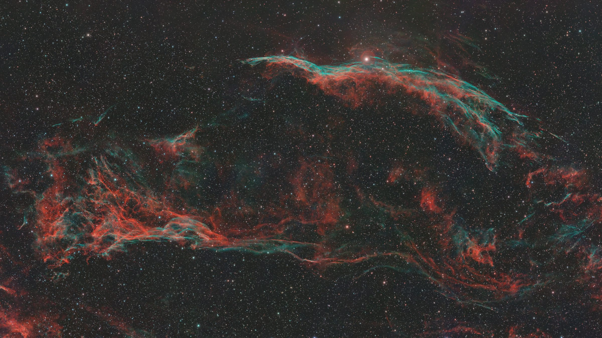
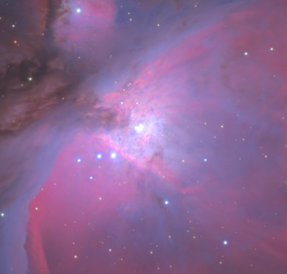
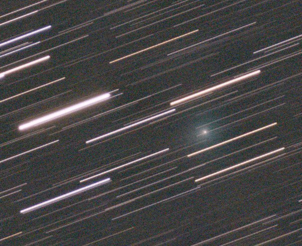
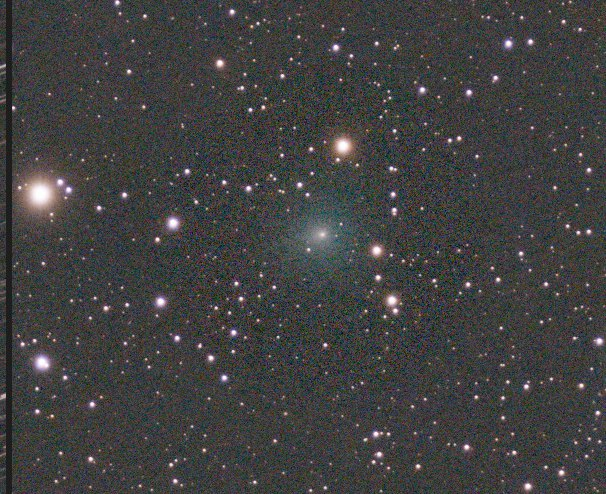
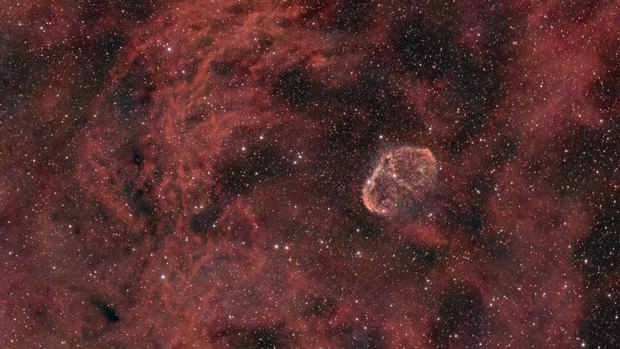
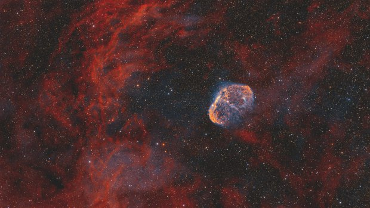
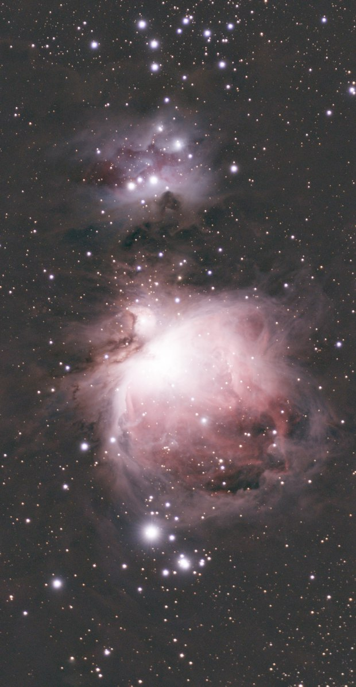
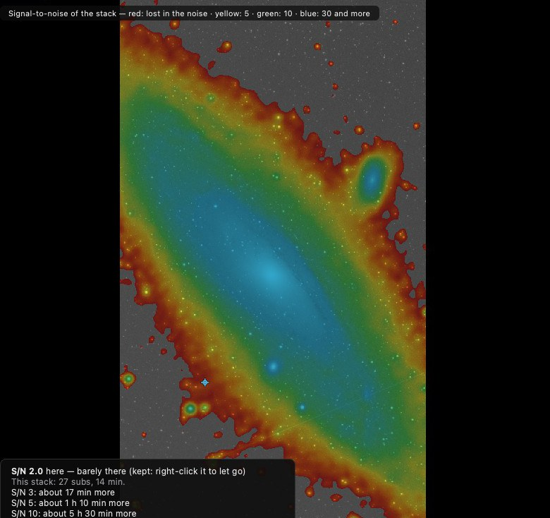

Logiciel d'astrophotographie · gratuit · macOS, Windows, Linux
Empilement et traitement
des images du ciel profond.
Poses couleur, bi-bande et monochromes, mosaïques, traitement de l'image linéaire puis étirée, mesure de la pile : dans une seule application.
NGC 6960 · Dentelles du Cygne · Seestar S50 Pro · traitement COSMO
Matériel pris en charge
- Seestarposes brutes, rotation de champ des montures alt-azimutales, mosaïques
- Dwarffichiers Draco à deux couches HO et SO, mosaïques numérotées
- Caméra couleurFITS bruts, bias, darks, flats, plusieurs nuits
- Caméra mono nouveauroue à filtres : L, R, G, B, Hα, OIII, SII
- Piles existantesFITS, TIFF, XISF (PixInsight), masters compris
Fonctions
Ce que fait COSMO.
Au survol, les vignettes passent de l'avant à l'après. Un clic ouvre la page de l'outil.
Empilement couleur, bi-bande et mono
Les poses d'une roue à filtres s'empilent en une fois, chaque filtre avec sa calibration et la même part de meilleures poses. Les filtres s'ouvrent ensemble et se mélangent en LRGB, HαLRGB ou SHO ; l'atelier SHO garde les couleurs naturelles des étoiles. Capteurs couleur et piles bi-bande passent par la même fenêtre.

 COSMOStars
COSMOStars
Moteur COSMO
Trois réseaux entraînés pour COSMO, inclus dans l'application.
Avancement estimé par l'auteur, mis à jour à chaque version.

Mosaïques
Panneaux empilés à part puis raccordés : fonds accordés, vignetage commun retiré, distorsion de l'optique prise en compte.


HDRPoses longues et courtes
Au-delà du seuil de saturation mesuré sur les poses longues, les poses courtes prennent le relais.


combinéeComètes
Comète trouvée par son déplacement, suivie même lente : comète et étoiles nettes, et l'animation.


Fire & IceBi-bande et palettes
Hα et OIII en COSMO Fire & Ice, HOO ou SHO, avec les couleurs naturelles des étoiles.

Pas à pas ou en un clic
Chaque étape prévisualisée, appliquée, reprise à tout moment. One click enchaîne les étapes restantes d'un pipeline.

 Gaia
Gaia
Gaia DR3
Couleurs calibrées sur le catalogue, sans plate solving. Le Lab place les étoiles du champ en 3D à leurs distances.

Mesure de la pile
FWHM et excentricité sur tout le champ, avec le diagnostic optique ; magnitude limite d'après Gaia. Carte du rapport signal sur bruit et temps de pose supplémentaire par région.
Les outils de traitement
Image linéaire
- LRGB mix
- SHO mix
- Crop
- Background
- Colour calibration
- Sharpen
- Denoise
- Stretch
Image étirée
- Curves
- Saturation
- Temperature
- Remove green
- Hα boost
- Narrowband palette
- HDR multiscale
- Dark structures
- Faint nebulosity
- Local contrast
- Details
Étoiles
- Stars
- Star colours
- Remove halo
- Recombine
Avant / après
Cinq outils, mêmes piles.
Réglages par défaut. Glissez sur l'image pour comparer.

 avantCOSMOSharp
avantCOSMOSharp
Images traitées dans COSMO
Seestar S50 Pro. Un clic agrandit l'image et donne les outils utilisés, moteurs externes compris.
Téléchargement · gratuit
COSMO 0.12.0
L'application et les trois réseaux de COSMO. GraXpert, StarNet et les outils RC-Astro restent facultatifs, utilisés depuis votre installation.
Premier lancement et empreintes SHA-256 →Guide de démarrage →Nouveautés →
En téléchargeant, vous acceptez la licence : usage gratuit ; pas de redistribution, pas d'utilisation des réseaux hors de l'application.